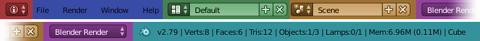

简介¶
信息编辑器位于默认屏幕的顶部，并具有以下组件。
标题栏¶

信息编辑器标题栏。¶
编辑器类型选择器（红色），菜单（蓝色），屏幕数据块（绿色），场景数据块（橙色），引擎选择器（紫色），资源信息（水绿色）。
Workspaces¶
Tabs to select workspaces.
控制¶
- 返回前一视图
当区域被最大化时返回到原屏幕布局的一个按钮。
- 场景
Data-block menu 允许你选择不同的 Scenes。拥有多个场景允许你使用单独的虚拟环境，完全独立的数据，或使用它们之间关联的物体和/或网格数据。
- 引擎
给出可用的渲染引擎列表。
- 渲染/烘焙进度
渲染或烘焙时会显示进度条和取消按钮。悬停在它们上面的是显示一个时间预估。
- 捕获停止
显示一个 screen casting 停止录制按钮。
- 报告消息
操作标签以显示结果或警告。它在很短的时间后消失。通过在左侧图标上点击 LMB ，完整报告将被复制到一个新的文本数据块中，你可以在文本编辑器中打开该文本块。
- Blender 图标
点击Blender标志打开 启动画面.
- Blender版本
该标签显示Blender版本。
- 资源信息
- 场景
根据模式和物体类型显示有关当前加载场景的信息。当显示两个数字时，第一个数字表示选中，第二个数字表示总数。这可以是顶点，面，三角形或骨骼的数量，以及选定的物体和灯都一样。
- 内存
“内存”标签显示Blender计算的内存消耗量。这可以帮助你确定何时达到硬件极限。
- 活动物体
当前选定物体的物体类型。